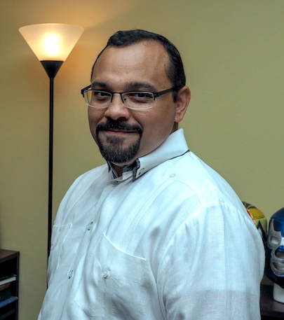

Visual Media
COMM 2034 | Shanks 160 | MW 2:30 p.m. - 3:45 p.m.
Dr. Carlos Evia
Dr. Carlos Evia is an associate professor of communication at Virginia Tech. He is also a researcher in the Virginia Tech centers for Occupational Safety and Health Research, and Human-Computer Interaction. His research focuses on planning and developing technology-based solutions for workplace communication problems, particularly in situations involving multicultural audiences. Those technology-based solutions frequently include technical content structured in a workflow following the Darwin Information Typing Architecture (DITA). He is also co-chair of the Lightweight DITA subcommittee with the Organization for the Advancement of Structured Information Standards.
Education
Class Overview
The purpose of this course is to introduce you to the concepts and skills needed to succeed as producers of media, journalism, public relations, and other communication artifacts. To achieve this goal, you will frequently produce visual and written assignments in this course. In addition, you are expected to become critical consumers of media so that your own media production will be creative, accurate, ethical, and understandable.
Specifically, you will learn the following:
Required Materials
My Take
Along with Media Writing, Visual Media is one of my favorite classes this semester. Previously just an International Relations major, all of my classes are theory, discussion, papers, lectures. This is my first class in which I actually have projects and get my hands dirty. Making my resume for Communications related positions was difficult to do without any videos, photos, or hard skills to mention. With this class, I got to play with Adobe Creative Suite - something I've always wanted to do. I noticed a lot of entry positions for internships and jobs in Communications prefer website-creation experience, and I think if I hadn't taken this class, I wouldn't have learned it on my own as it's pretty intimidating. Through this class, I've learned that the videography skills/passion I indulged in in middle school and early high school requires a bit of touching up to do; technology and programs has definitely improved since then. Although Premiere was difficult to learn at first, at least I know that if I want to work with video in the future, I can practice and improve by the time I get into the working world.
Contact Information
Instructor: Dr. Carlos Evia
Email: cevia@vt.edu
Office: Shanks 153